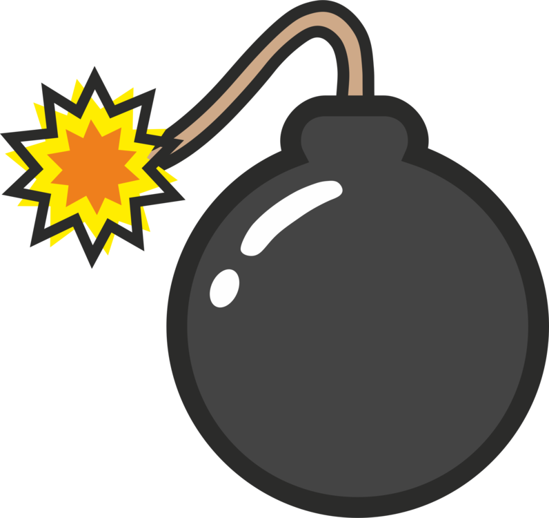
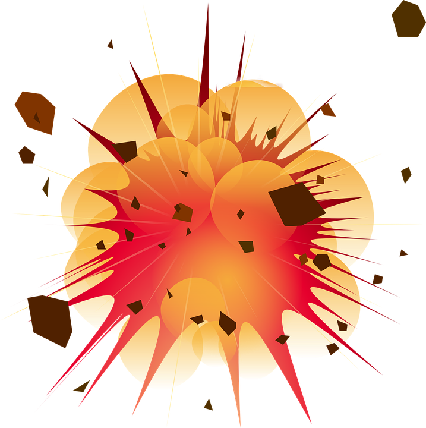

Projectile Simulation
 
Variables
u
x
/ Horizontal initial velocity
0
ms
-1
u
y
/ Vertical initial velocity
0
ms
-1
a / Acceleration due to gravity
-9.81
ms
-2
h / Initial Height
0
m
u / Initial Resultant Velocity
0
ms
-1
Fire!
Clear
Current Time: 0 s
Expected Time: 0 s
Canvas not supported; please update your browser.
Canvas not supported; please update your browser.